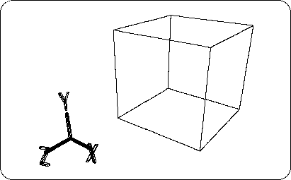

Return to previous page | Return to menu | Go to next page
The camera position (viewpoint) can be changed in the “Perspective” frame. Let's actually change the viewpoint.
First, move the mouse cursor to the “Perspective” frame.
If you press the “F” key here, the object (in this case the cube) will appear to fill the frame.
Recovery / movement of viewpoint
The following operations can be used to rotate and move the camera position in various ways.
Scaling an object on the screen
The following operations can be used to enlarge and reduce the object on the screen.
"Z" key + middle mouse button zooms in, "Z" key + right mouse button zooms out. However, it is not recommended to use it because it may be crazy.
If Perth is crazy,
[Camera] → [Reset]
Select to restore.
Please note that the menu notation of “Mesh” is “Polygon” in SOFTIMAGE 3D (version3.0 or later). The term “Mesh” in the text also means “Polygon” in SOFTIMAGE 3D.
Perform the above operation to change the viewpoint so that it is easy to see as shown in Figure 2-3.
